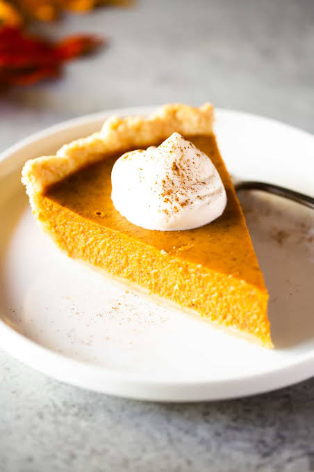

The BEST Pumpkin Pie
Introduction

Pumpkin pie is the best dessert when fall comes around. I chose it because i personally love pumpkin pie and its currently fall. Even if you dont bake, anyone can still make this easy recipe. If you want to see where I got it from, you can check out the original recipe on Tastes Better From Scratch.
Ingredients
-
Pie Crust: 1 unbaked deep-dish 9-inch shell
-
Pumpkin Puree: 15 ounces of canned pumpkin
-
Evaporated Milk: 12 ounces
-
Sugar & Spices: ¾ cup granulated sugar, 1 teaspoon ground cinnamon, ½ teaspoon salt, ½ teaspoon ground ginger, and ¼ teaspoon ground cloves
-
Eggs: 2 large eggs
Instructions
- Preheat your conventional oven to 425°F (218°C) to ensure it reaches the correct baking temperature.
- Beat the eggs and pumpkin puree together thoroughly in a large mixing bowl until smooth.
- Combine the granulated sugar, cinnamon, salt, ginger, and cloves in a separate bowl before stirring them into the pumpkin mixture.
- Pour the blended filling carefully into your unbaked pie shell.
- Bake the pie at 425°F for exactly 15 minutes, then reduce the heat to 350°F and bake for an additional 40 to 50 minutes until the center sets.